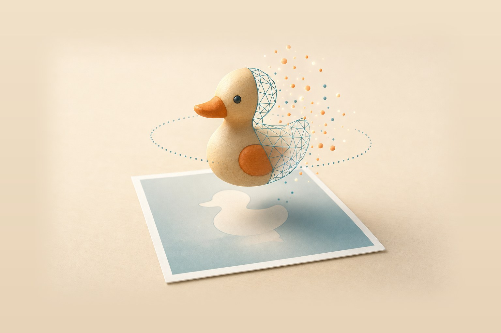
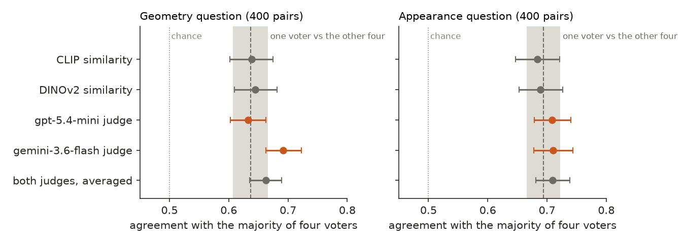
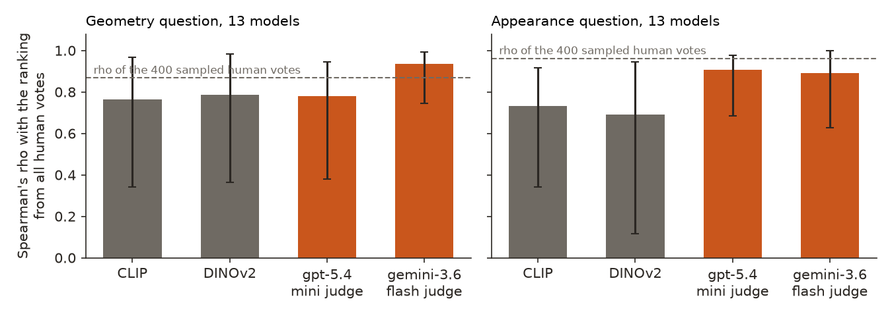
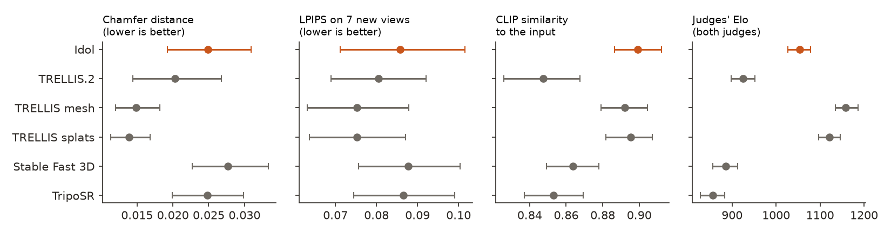
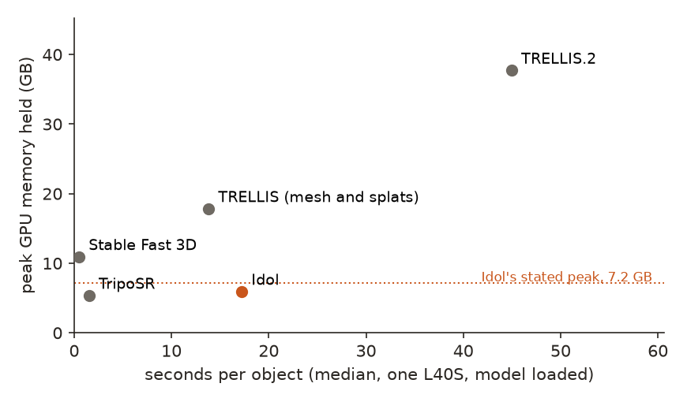

← Research·Experiments·
Judging image-to-3D models: cheap scores agree with human votes about as often as one more voter
A new open model, Speridlabs’ Idol, turns one photo into a 3D object in seconds. To say whether it is any good you need a score, and people are slow. This note checks the cheap scores against 262,668 public human votes, then uses them on five open models and 40 scanned objects whose true shapes are known.
Update, Nov 11, 2026: TRELLIS.2 added, once the licence of its gated background remover was accepted: same 40 objects, same GPU, every scanned-object table and figure refitted with it.

Summary: the short answer and the key results
In short
Which cheap way of scoring a generated 3D object agrees with people?
None by much. On 400 pairs where five people were asked which of two 3D models has the right shape, and 400 where they were asked which looks more like the photo, CLIP similarity, DINOv2 similarity and two vision-language model judges each side with the majority about as often as one more voter would: 0.63 to 0.69 on shape and 0.68 to 0.71 on looks, against 0.64 and 0.69 for a voter. The one scorer that does better is gemini-3.6-flash as a judge, on shape, by 5.5 points. Ranking 13 whole models is easier: the judges reach Spearman 0.78 to 0.93 with the full human ranking, CLIP 0.73 to 0.76. On 40 scanned objects with known true shapes, TRELLIS builds the best geometry on average; TRELLIS.2 is the most accurate on a typical object but flattened 6 of 39 into slabs, and CLIP ranks it last. Idol runs in 17 seconds with 6 GB of GPU memory on an L40S, as its model card says, and CLIP ranks it first while its shape scores sit with TripoSR’s. The two public human leaderboards disagree with each other on the five models they share.
Key results
| What we tested | Result | Compared with |
|---|---|---|
| Does a cheap scorer pick the side most voters picked? (400 shape pairs, 400 looks pairs) | About as often as one voter does. Shape: CLIP 0.639, gpt-5.4-mini judge 0.633, gemini-3.6-flash judge 0.692 [0.662, 0.722]. Looks: CLIP 0.684, judges 0.708 and 0.711 | One voter against the other four: 0.637 [0.607, 0.666] on shape, 0.694 [0.665, 0.723] on looks |
| Does any scorer beat CLIP, pair by pair? | Only gemini-3.6-flash, only on shape: +5.3 points [+1.5, +9.3]. On looks every difference includes zero | gpt-5.4-mini on shape: −0.6 points [−4.8, +3.3] |
| Do the scorers rank 13 models as all 49,261 comparisons do? | Judges: Spearman 0.78 to 0.93; CLIP 0.76 (shape) and 0.73 (looks), with intervals reaching down to 0.34 | The same 400 human votes per question: 0.87 and 0.96 |
| Do the judges answer the five GPTEval3D questions separately? | No. One reply picks the same side on all six questions 83% (gpt) and 94% (gemini) of the time | Swapping the order of the two objects changes the final answer in 28% and 19% of pairs |
| On 40 scanned objects, which model builds the right shape? | TRELLIS: Chamfer 0.015 [0.012, 0.018]; TRELLIS.2 0.020 (median 0.011, the lowest), Idol 0.025, TripoSR 0.025, Stable Fast 3D 0.028. The judges put TRELLIS first (Elo 1158), Idol third (1054), TRELLIS.2 fourth (925), ahead of Stable Fast 3D (886) and TripoSR (856) | The true object squashed 40%: Chamfer 0.030 |
| Does a scorer prefer the true object to a damaged copy? | CLIP prefers a copy squashed 40% in 12 of 40 objects, and scores it 0.896, above TRELLIS’s mesh (0.892) | The gemini-3.6-flash judge prefers the squashed copy in 4 of 40; gpt-5.4-mini in 12 (ties count half) |
| Idol’s claim: fast, under 7.2 GB | Holds on its own terms: 17.2 s per object, 5.96 GB held at peak on one L40S (its card lists 16.6 s on an L40S; the 2 to 3 s figures are for B200 and B300 cards) | TRELLIS 13.8 s, 17.9 GB; TRELLIS.2 44.9 s, 37.7 GB (1 of 40 out of memory on the 48 GB card); TripoSR 1.5 s, 5.4 GB; Stable Fast 3D 0.5 s, 11.0 GB |
01Introduction
Show five people a photo of a sneaker and two spinning 3D sneakers made from it, and ask which has the right shape. Often they split three to two. Take any one of them away and ask whether that person sides with the majority of the other four: on 400 such pairs, the answer is yes 64% of the time. That number is the bar for any automatic judge, because a score that agrees with the crowd as often as one of its members does is about as good a stand-in as one extra person. CLIP, the score most papers report, clears it by 0.2 points. A Gemini model shown the same frames clears it by 5.5.
What is known. Image-to-3D models take one picture and produce an object: a mesh (triangles with a texture) or a cloud of Gaussian splats. New ones arrive monthly. The latest, Idol from Speridlabs (600M parameters trained from scratch, Apache-2.0), claims up to a million splats in seconds in under 7.2 GB of GPU memory. Judging them is the hard part. When the true object exists, reconstruction scores compare shapes and pictures with it. When it does not, papers use CLIP similarity between renders and the photo, or ask a vision-language model: GPTEval3D (CVPR 2024) found GPT-4V’s pairwise verdicts agreed with people 71% of the time against 57% to 63% for CLIP. Human arenas now publish the ground truth: 3D Arena (123,243 votes) and benchmark.ai, whose votes Rapidata released as a dataset with every turntable video.
What is missing. A check of today’s cheap scorers against those public votes, pair by pair and with the noise of the voters themselves as the yardstick; and a look at the new model on objects whose true shape is known.
Which cheap score for an image-to-3D output agrees best with human votes, and how do the open models, Idol among them, compare when the true shape is known?
What this note does. Its contributions:
- A measurement: four cheap scorers against 800 voted pairs, with how often one voter agrees with the other four as the ceiling.
- A paired comparison that separates the scorers, and a look inside the judges (do the five criteria differ? does the order matter?).
- A small leaderboard of five open models on 40 Google Scanned Objects, with geometry, picture and judge scores, known-answer checks for every scorer, and speed and memory on one GPU.
- eval3d.py, a scorer that renders any mesh or splat file the same way and scores it against a true mesh.
What would count as an answer. Set before scoring:
- Agreement is measured against votes the scorers were never tuned on, and compared with one voter’s agreement on the same pairs.
- A scorer “beats” another only if the paired difference, pair by pair, has an interval above zero.
- Every scorer is also checked on cases with a known answer: the true object against a damaged copy of itself.
- Every model’s output is rendered by the same code, from the same cameras, under the same light.
02Setup
2.1 3D 101, for software engineers
- A mesh is a list of triangles (vertices and faces, like a polygon file), plus colour: either a texture image wrapped onto the triangles with UV coordinates, or one colour per vertex. Games and CAD use meshes. TRELLIS, TripoSR and Stable Fast 3D output meshes.
- Gaussian splats are a cloud of soft, coloured blobs. Each splat has a centre, a size along three axes, a rotation, an opacity and a colour. Drawn together from any angle they look like a solid object, the way a pointillist painting does. There are no triangles, so there is no surface to measure directly. Idol outputs 262,144 splats per object by default; TRELLIS can output splats too.
- Normals show shape without paint. A normal is the direction a surface faces. Colouring each pixel by its normal (red for right, green for up, blue for toward you) gives an image where a painted-on eye looks flat and a carved one shows. Here normals are computed from each render’s depth map, so meshes and splats get the same treatment.
- Chamfer distance is “how far off is each point, on average”. Sample points on both surfaces; for each point find the nearest point on the other surface; average those distances both ways. Zero means the shapes coincide. It is in units of the object’s size here (the longest side is 1), so 0.015 means points are 1.5% of the object’s length off.
- F-score at 5% combines two shares: of the generated points, how many are within 5% of the size of the true surface (no extra bits), and of the true points, how many are that close to the generated one (no missing bits).
- PSNR, SSIM and LPIPS compare pictures. Render the output and the true object from the same new viewpoint and compare pixels: PSNR by squared error, SSIM by local structure, LPIPS by a neural network’s sense of difference (lower is better). LPIPS on normal maps compares shape only.
- CLIP similarity needs no true object. CLIP turns an image into a vector; the score is the cosine between the input photo’s vector and each render’s, averaged over views. It asks “does this look like the same thing?”, so it can be fooled by the right colours on the wrong shape.
- Elo from pairwise wins. A Bradley-Terry model turns “A beat B” records into one score per model, so a 100-point gap means the higher one wins 64% of the time. Arenas use it; this note uses it for the judges too.
2.2 Chamfer distance by hand, on four points
True shape: points at 0, 1, 2, 3 on a line. Generated shape: 0, 1, 2, 5 (the last point is off).
| Direction | Nearest-point distances | Mean |
|---|---|---|
| Generated to true | 0, 0, 0, |5 − 3| = 2 | 0.5 |
| True to generated | 0, 0, 0, |3 − 2| = 1 | 0.25 |
| Chamfer (mean of the two) | 0.375 |
One stray point moves the score; a missing part shows in the second row, an extra part in the first. The real version uses 30,000 points per surface.
2.3 Two data sets: one with votes, one with true shapes
| Set | What it is | Size | Used in |
|---|---|---|---|
| Rapidata image-to-3D benchmark (dataset, CC BY 4.0) | The votes behind benchmark.ai: 13 models, 357 input images, each pair of outputs shown as two 10-second turntable videos; geometry pairs use grey untextured renders | 49,261 pairs (24,636 geometry, 24,625 appearance), 262,668 votes | All of them for the human ranking of the 13 models; a random 400 geometry and 400 appearance pairs with exactly five votes for pair-level agreement (human_pairs.csv) |
| Google Scanned Objects (Gazebo Fuel, CC BY 4.0) | Household objects scanned to textured meshes: shoes, toys, boxes, kitchenware | 40 objects | Generation, reconstruction scores, the judges’ leaderboard and the known-answer checks (gso_objects.csv) |
The 40 objects are the first 40 of 70 drawn at random (seed 0) from the 1,033 in the collection, after dropping the 2 whose shortest side is under a tenth of their longest (a flat object seen edge-on is a poor single-image test). Each model gets the same input: the true object rendered at 512 by 512 pixels from 30° around and 20° up, unlit (the scans’ textures already hold their lighting), with the object’s outline as an alpha mask so no model needs its background remover.
2.4 Five open models
| Model | Maker, licence | Output scored | Settings |
|---|---|---|---|
| Idol | Speridlabs, Apache-2.0 (its image encoders, DINOv3 and the FLUX.2 VAE, have their own gated licences) | 262,144 Gaussian splats | Defaults: 50 steps, guidance 3.0, “synthetic” framing, seed 42 |
| TRELLIS (image-large, 1.2B) | Microsoft, MIT | Both: textured mesh (GLB) and splats, from one run | Defaults: 25 + 25 steps, seed 1; GLB with 95% simplification, 1,024-pixel texture |
| TripoSR | Stability AI and Tripo, MIT | Mesh with vertex colours | Marching cubes at 256, framing 0.85 |
| TRELLIS.2 (4B) | Microsoft, MIT (its image encoder DINOv3 and background remover RMBG-2.0 have their own gated licences) | Textured mesh (GLB) | Defaults: 1024 cascade, seed 42; GLB with its demo’s export settings at the smallest face target (100,000 faces, 2,048-pixel texture, remeshed) |
| Stable Fast 3D | Stability AI, community licence (gated) | Textured mesh | 1,024-pixel texture, no remeshing, framing 0.85 |
TRELLIS.2, the best open model on benchmark.ai, was added after first publication, once the licence of its gated background remover (briaai/RMBG-2.0) was accepted. Its GLB export (remeshing, UV unwrapping and texture baking) runs mostly on the CPU and took 15 minutes an object at its demo’s default 500,000-face target, so it uses the demo’s smallest target, 100,000 faces: the other meshes here have 2,000 to 100,000 faces (TRELLIS 2,000 to 9,000, Stable Fast 3D 13,000 to 26,000, TripoSR 54,000 to 101,000, on three objects checked). Its job also gets 8 CPU cores where the others had Modal’s default share, and its time is reported in two parts.
2.5 The scorers
- CLIP similarity (ViT-L/14, OpenAI weights) and DINOv2 similarity (dinov2-base, a self-supervised encoder that weighs shape and layout more than words): mean cosine between the input image and 8 views every 45°. In a pair, the higher score wins.
- Two judges, after GPTEval3D: gpt-5.4-mini (OpenAI) and gemini-3.6-flash (Google, through OpenRouter), at low reasoning effort. Each sees the input image and a sheet of four views per object (for the voted pairs, four frames of each video at 0°, 90°, 180° and 270°; for the scanned objects, four colour views above their four normal maps) and answers six questions with “1” or “2”: the five GPTEval3D criteria (alignment with the image, 3D plausibility, texture-geometry coherency, texture detail, geometry detail) and a final one. For voted pairs the final question is the voters’ own; for the scanned objects it is “which is the better 3D version of the object?”. Every pair is asked twice with the objects swapped; a side wins only if both orders pick it, otherwise it is a tie.
- Reconstruction scores (scanned objects only): Chamfer distance, F-score at 2% and 5%, silhouette IoU, and PSNR, SSIM and LPIPS on colour, plus LPIPS on normals, over the 7 views the input did not show.
Agreement with people is scored the way one voter is: for each pair, leave one of the five voters out, take the majority of the other four (a 2–2 split counts half), and ask whether the scorer picked that side; average over the five. The left-out voter, scored the same way, is the ceiling. Against the plain five-voter majority every scorer reads 0.6 to 1.8 points higher (agreement_human.csv, column agree).
2.6 Every output rendered the same way
eval3d.py loads a mesh with its texture or vertex colours, or a standard splat file with each splat’s base colour (the part of splat colour that changes with viewing angle is dropped, so both kinds show one colour per surface point). It centres each object and scales its longest side to 1, then turns depth maps from 24 cameras around a sphere into surface points, so meshes and splats are measured by the same rule and hidden insides do not count. Models pick their own “up” and “front”, so each output is aligned to the true object: 24 starting rotations, each refined by ICP (rotation, shift and one scale), and the one with the lowest Chamfer distance kept. This flatters every model the same way. Meshes are drawn with nvdiffrast and splats with gsplat, unlit, on white, from the same cameras.
03How the study was run
- Goal and design written first: compare Idol with open models on scanned objects; test which cheap metric agrees with public human votes.
- Gates. Idol’s two encoders and Stable Fast 3D are gated; their licences were accepted on Hugging Face before any run. TRELLIS.2’s background remover was accepted after first publication, and TRELLIS.2 was added then.
- Human sample: 400 geometry and 400 appearance pairs with five votes each, drawn at random from 49,261; 1,469 videos, 8 frames each.
- Scorers on the human sample: CLIP and DINOv2 on 1,469 videos; both judges on 800 pairs in both orders (3,200 calls).
- Generation: 5 models on the same 40 inputs, each on one L40S, after one warm-up object (200 objects; one TRELLIS.2 object ran out of memory twice, a second needed one retry).
- Scoring: 6 outputs (TRELLIS counted twice) and 3 damaged copies of the true object per object, all rendered and scored by eval3d.py (359 scorings).
- Judges on the scanned objects: the 15 model pairs (10 where TRELLIS.2 failed) and 3 true-versus-damaged pairs per object, both orders (2,860 calls).
- Analysis: agreement with bootstrap intervals over pairs; paired differences; Bradley-Terry scores; rank correlations.
| Fixed before any scoring | Changed after reading results |
|---|---|
| The models and their default settings; the GPU (L40S); GSO as the true-shape set; the scorers, the judges’ questions and the position swap; the damaged copies; bootstrap intervals and paired differences | The plan named 3D Arena as the human data; Rapidata’s release of the benchmark.ai votes, with videos, allowed pair-level agreement, so it became the main test and 3D Arena a side check. The ceiling was first scored against the five-voter majority; it is reported against the four-voter one so voter and scorer face the same target (both versions are in the results). No size of gain was set in advance as a bar. TRELLIS.2 was added after first publication (its licence gate opened then); its GLB export uses its demo’s smallest face target, chosen after a 15-minute-an-object test at the default, and its job got 8 CPU cores. |
Conditions: one NVIDIA L40S (48 GB) per job on Modal, $12.98 billed in all, including image builds, failed attempts and the TRELLIS.2 addition ($6.50 of it). Judges: $15.17 (gpt-5.4-mini $5.68, gemini-3.6-flash $9.49) at list prices from logged token counts. CLIP and DINOv2 on the human sample ran on an Apple-silicon laptop.
04Results
Eight findings:
- 4.1 Pair by pair, cheap scorers agree with the voters about as often as one voter does.
- 4.2 Only the Gemini judge beats CLIP, and only on shape.
- 4.3 Ranking whole models is easier, and the judges do it better than CLIP.
- 4.4 The judges give one answer, not five.
- 4.5 On scanned objects TRELLIS builds the best shape; CLIP ranks Idol first and TRELLIS.2 last.
- 4.6 Known answers: CLIP misses a squashed object; the Gemini judge catches it.
- 4.7 Idol’s speed and memory match its card on an L40S.
- 4.8 Two public human leaderboards disagree with each other.
4.1 Pair by pair, cheap scorers agree with the voters about as often as one voter does
On the 400 geometry pairs, one voter agrees with the majority of the other four 63.7% of the time [60.7, 66.6]. CLIP agrees 63.9% [60.2, 67.4], DINOv2 64.4%, the gpt-5.4-mini judge 63.3% and the gemini-3.6-flash judge 69.2% [66.2, 72.2]. On the 400 appearance pairs one voter agrees 69.4% [66.5, 72.3]; CLIP 68.4%, DINOv2 68.9%, the judges 70.8% and 71.1%. All are far from chance (50%) and none is far from a single voter (Figure 1).

The ceiling is low because people disagree: 170 of the 400 geometry pairs and 134 of the appearance pairs split three to two. On the pairs where at least four of five agree (230 geometry, 266 appearance), the scorers side with that majority 72% to 81% of the time; the gemini judge is still in front on geometry (81%, CLIP 74%) and all are level on looks (76% to 80%).
4.2 Only the Gemini judge beats CLIP, and only on shape
Pair by pair, gemini-3.6-flash agrees with the voters 5.3 points more often than CLIP on geometry [+1.5, +9.3] and 5.5 points more often than the left-out voter [+2.4, +8.4]. No other difference, on either question, has an interval that excludes zero, except gemini over gpt-5.4-mini on geometry.
| Paired difference in agreement (points) | Geometry | Appearance |
|---|---|---|
| gemini-3.6-flash judge − CLIP | +5.3 [+1.5, +9.3] | +2.6 [−1.1, +6.6] |
| gpt-5.4-mini judge − CLIP | −0.6 [−4.8, +3.3] | +2.4 [−1.3, +6.5] |
| gemini-3.6-flash − gpt-5.4-mini | +5.9 [+3.1, +8.7] | +0.2 [−2.6, +2.8] |
| DINOv2 − CLIP | +0.6 [−3.9, +5.2] | +0.5 [−3.4, +4.5] |
| gemini-3.6-flash − one voter | +5.5 [+2.4, +8.4] | +1.6 [−1.8, +5.0] |
| CLIP − one voter | +0.2 [−3.8, +4.0] | −1.0 [−5.0, +2.8] |
The judges see the same four frames per side. On geometry pairs the frames are grey, untextured renders, and gpt-5.4-mini does no better there than an embedding that never reads the question. The model family matters more than the method: GPTEval3D’s 71% for GPT-4V against CLIP’s 57% to 63% is roughly matched by one of two current judges and not by the other.
4.3 Ranking whole models is easier, and the judges do it better than CLIP
Turned into Bradley-Terry scores over the same 400 pairs, the gemini judge ranks the 13 models with Spearman 0.93 [0.74, 0.99] against the ranking from all 24,636 geometry comparisons; CLIP’s mean similarity per model reaches 0.76 [0.34, 0.97]. On appearance the judges reach 0.89 and 0.91, CLIP 0.73. The 400 sampled human votes themselves reach 0.87 and 0.96, so the judges are near what 400 pairs can show (Figure 2).

Averaging helps every scorer: one that is right 64% of the time on single pairs sorts 13 models well once each has been compared about 60 times. With 13 models the intervals still span half the scale; the 0.17 gap between CLIP and the gemini judge on geometry is suggestive, not shown.
4.4 The judges give one answer, not five
Asked six separate questions about a pair, gpt-5.4-mini picks the same object for all six in 83% of replies and gemini-3.6-flash in 94%. Gemini’s “texture detail” answer on grey, untextured geometry renders agrees with the voters as often as its “geometry detail” answer (71% each, against the five-voter majority). The five GPTEval3D criteria act as one overall preference: reported as five scores, they add no information here.
Order matters a little. Shown first, an object is picked 57% of the time by either judge. Swapping the two objects changes the final verdict in 28% of pairs for gpt-5.4-mini and 19% for gemini; those pairs count as ties, which is why both orders are needed.
4.5 On 40 scanned objects TRELLIS builds the best shape; CLIP ranks Idol first and TRELLIS.2 last
TRELLIS’s mesh is off by 1.5% of the object’s size on average (Chamfer 0.015 [0.012, 0.018]), with an F-score at 5% of 0.96; TRELLIS.2 follows at 0.020 [0.014, 0.027] and 0.89; Idol, TripoSR and Stable Fast 3D sit together at 0.025 to 0.028 and 0.84 to 0.87. CLIP orders them differently: Idol 0.899 first, TRELLIS 0.892 to 0.895, Stable Fast 3D 0.864, TripoSR 0.853, TRELLIS.2 0.847 last. The judges, shown colour and normal views, put TRELLIS first (mesh 1158 [1135, 1186], splats 1121 [1097, 1146]) and Idol third at 1054 [1026, 1079], then TRELLIS.2 at 925 [898, 952], Stable Fast 3D (886) and TripoSR (856): they separate Idol from TripoSR where Chamfer does not. The two judges agree on that order except for TRELLIS.2, which gemini-3.6-flash puts fourth (945) and gpt-5.4-mini level with Stable Fast 3D and TripoSR (907 against 927 and 904) (Figure 3).
TRELLIS.2 has two faces. On a typical object it is the most accurate model here: its median Chamfer distance is 0.0106, against 0.0112 and 0.0120 for TRELLIS’s splats and mesh, 0.018 for Idol and 0.019 to 0.022 for TripoSR and Stable Fast 3D, and its normal maps are the second closest to the truth (LPIPS 0.061). But on 6 of the 39 objects it produced it flattened the object into a slab or stood it on a large floor plane: the tea set, a bundt pan, a sauce bottle and three slim boxes. Those six carry its mean, its silhouette score and its low CLIP and judge scores. A seventh object, a game box, ran out of memory on the 48 GB card twice and has no output; it counts as missing, not as a loss, in every table. Whether the slabs come from these clean, unlit, masked inputs (benchmark.ai feeds it photos and renders with backgrounds) was not tested.

| System | Chamfer ↓ | F-score 5% ↑ | Silhouette IoU ↑ | PSNR ↑ | LPIPS ↓ | Normal LPIPS ↓ | CLIP ↑ | Judges’ Elo |
|---|---|---|---|---|---|---|---|---|
| TRELLIS mesh | 0.015 | 0.962 | 0.873 | 22.8 | 0.075 | 0.055 | 0.892 | 1158 |
| TRELLIS splats | 0.014 | 0.970 | 0.873 | 23.3 | 0.075 | 0.067 | 0.895 | 1121 |
| Idol | 0.025 | 0.852 | 0.774 | 22.3 | 0.086 | 0.083 | 0.899 | 1054 |
| TRELLIS.2 (39 objects) | 0.020 | 0.894 | 0.841 | 22.3 | 0.081 | 0.061 | 0.847 | 925 |
| TripoSR | 0.025 | 0.873 | 0.821 | 22.3 | 0.087 | 0.083 | 0.853 | 856 |
| Stable Fast 3D | 0.028 | 0.843 | 0.800 | 21.5 | 0.088 | 0.079 | 0.864 | 886 |
| True object, bumpy | 0.008 | 1.000 | 0.930 | 25.4 | 0.077 | 0.086 | 0.842 | – |
| True object, squashed 40% | 0.030 | 0.820 | 0.753 | 21.2 | 0.090 | 0.084 | 0.896 | – |
| True object, blurred texture | 0.001 | 1.000 | 0.997 | 27.0 | 0.046 | 0.002 | 0.873 | – |
| True object itself | 0 | 1 | 1 | – | 0 | 0 | 0.910 | – |
Idol’s mean hides a split: its median Chamfer is 0.018, closer to TRELLIS’s 0.012, and a few objects with a wrong depth or a stretched back pull the mean up; its silhouette IoU, 0.774, is the lowest. The picture scores barely separate the models (PSNR 21.5 to 23.3, LPIPS 0.075 to 0.088): from new viewpoints, an unlit scanned object and a plausible guess differ by similar amounts. TRELLIS’s splats and mesh, from the same run, score alike on shape; its mesh is cleaner on normals (0.055 against 0.067).
The turntables below show six objects, the first six of the 40 in draw order, as each system made them after the same alignment. Pick an object to switch.
Gallery. Each video: the true object (top left), then Idol, TRELLIS.2, TRELLIS mesh, TRELLIS splats, Stable Fast 3D and TripoSR, turning together (the toy tea set shows one of TRELLIS.2’s flat slabs; the game box is the object it ran out of memory on), unlit, from 20° up; 36 frames 10° apart. Rendered by eval3d.py; laid out by make_gallery.py.
4.6 Known answers: CLIP misses a squashed object; the Gemini judge catches it
Each scorer was shown the true object against three damaged copies of it: every vertex pushed by random noise (bumpy), 40% shorter (squashed), and the texture blurred and washed out (blurred). Each damaged copy should lose.
| Prefers the true object to its damaged copy (of 40) | Bumpy | Squashed 40% | Blurred texture |
|---|---|---|---|
| CLIP similarity | 36 | 28 | 34 |
| gpt-5.4-mini judge, final answer | 39.5 | 28 | 35 |
| gemini-3.6-flash judge, final answer | 40 | 36 | 36 |
All three prefer the true object to the bumpy copy in 36 to 40 of 40; the judges see its noise plainly in the normal maps. Squashing is where they part: CLIP and gpt-5.4-mini prefer the 40%-shorter copy in about 3 objects in 10, while gemini-3.6-flash does so in 1 in 10. gpt-5.4-mini’s 28 comes mostly from ties: on 22 of the 40 squashed pairs its answer flipped when the two objects were swapped. Judge counts are the judge’s final answer with ties counted half; the other criteria give the same counts within one object (gso_checks.csv).
The reconstruction scores read the damage the way they should: squashing costs Chamfer (0.030, worse than any model) and silhouette IoU (0.753, worse than any model), and blurring costs LPIPS (0.046 against 0) while leaving Chamfer at 0.001. On these objects, where the true shape is known, CLIP picks the model with the lower Chamfer distance in 63% of model pairs [57, 67] and the one with the lower LPIPS in 64% [58, 70]. The judges’ final verdicts do a little better: gemini-3.6-flash 67% [61, 72] and 70% [65, 75], gpt-5.4-mini 64% [58, 69] and 66% [62, 71]. Before TRELLIS.2 was added, CLIP and gemini were level on geometry (both 69%); TRELLIS.2, accurate in shape but low in CLIP, is where CLIP goes wrong.
4.7 Idol’s speed and memory match its card on an L40S
On one L40S, with each model loaded and warmed up, Idol takes 17.2 seconds per object (90th percentile 17.6) and holds at most 5.96 GB of GPU memory (4.98 GB in use), under its stated 7.2 GB. Its model card lists 16.6 seconds on an L40S; the “under 2 seconds” and “3 seconds” in its description and announcement are for B200 and B300 cards. TripoSR is ten times faster and as small; Stable Fast 3D is the fastest, at half a second, but holds 11 GB; TRELLIS takes 13.8 seconds for both its outputs and holds 17.9 GB. TRELLIS.2 is the slowest and largest: 44.9 seconds per object (90th percentile 100.9), of which 23.8 are generation on the GPU and 16.8 the GLB export, with 8 CPU cores where the others had Modal’s default share; it held up to 37.7 GB (24.4 GB in use) and ran out of memory on one object (Figure 4).

4.8 Two public human leaderboards disagree with each other
3D Arena has rated five of the systems here: TRELLIS splats 1397, TRELLIS mesh 1303, Stable Fast 3D 1175, TRELLIS.2 1128, TripoSR 1081. Of the ten pairs among these five, the judges here order eight as 3D Arena does (Kendall 0.6): they put TRELLIS’s mesh above its splats and TRELLIS.2 above Stable Fast 3D, 3D Arena the reverse. CLIP orders nine of ten as 3D Arena does (0.8); Chamfer and LPIPS eight (0.6). With five systems a rank correlation can only take a few values, so this is a sanity check, not a measurement.
benchmark.ai rates two of the systems here, TRELLIS and TRELLIS.2, and puts TRELLIS.2 well ahead on both questions (geometry 1020 against 905, appearance 984 against 878 on its 13-model scale). 3D Arena puts TRELLIS ahead (1303 against 1128), and so does every score in this note: Chamfer, LPIPS, CLIP and both judges. Here the note sides with 3D Arena, with the caveat of section 4.5: on a typical object TRELLIS.2 is the more accurate of the two, and its loss comes from six collapsed objects.
A larger caution comes from the human data itself. On the five models that both benchmark.ai and 3D Arena rate (TRELLIS.2, TRELLIS, Hunyuan3D 2.1, SAM 3D Objects, Pixal3D), the two rankings run in nearly opposite directions: Spearman −0.7 for either benchmark.ai question. 3D Arena puts TRELLIS first of the five and TRELLIS.2 last; benchmark.ai puts TRELLIS.2 first and TRELLIS last (geometry) or second to last (appearance). The arenas use different input images, render pipelines, voters and periods. “Agrees with human preference” is only defined for one arena at a time.
05Compared with prior work
| GPTEval3D (Wu et al., 2024) | 3DGen-Bench (Zhang et al., 2025) | This note | |
|---|---|---|---|
| Task | Text-to-3D | Text- and image-to-3D | Image-to-3D |
| Human ground truth | Own expert annotations | 3DGen-Arena, 58,000+ battles | benchmark.ai’s public votes (Rapidata), 800 pairs sampled |
| VLM judge agreement with people | ✓ GPT-4V 0.71 vs CLIP 0.57 to 0.63 | ✓ trained 3DGen-Score and 3DGen-Eval beat CLIP and others | ✓ gemini-3.6-flash 0.69 vs CLIP 0.64 (shape); level on looks |
| Voter noise as the ceiling | ✗ | ✗ | ✓ one voter vs the other four |
| Paired test between scorers | ✗ | ✗ | ✓ |
| Known-answer checks of the scorers | ✗ | ✗ | ✓ damaged copies of true objects |
| Reconstruction against true shapes | ✗ | ✗ | ✓ 40 GSO objects |
| Speed and memory on one GPU | ✗ | ✗ | ✓ |
The ✗ marks reflect what the papers’ abstracts and main tables report, not a full reading of their appendices. Idol’s own model card scores Idol, TripoSplat, TRELLIS and LGM at the input view (PSNR, SSIM, LPIPS, IoU) and at seven new views (DINOv2, CLIP, sharpness), with Idol best on most columns. This note agrees that Idol scores high on CLIP and finds TRELLIS ahead once the true shape is measured from views the input did not show. The two use different images (their benchmark set; scanned household objects here), so neither contradicts the other.
06Implications for AI evaluation
Model-graded evaluation now stands in for people in many places, safety evaluations among them, and it is usually reported as “agrees with humans X% of the time”. This small study shows three ways that number misleads. First, without the voters’ own agreement beside it, 64% sounds poor; here it equals a voter. Second, a judge’s per-criterion breakdown can be one opinion repeated: 94% of one judge’s replies gave the same answer to six questions, including a question about texture asked of untextured renders. Third, the human “truth” moved with the arena: two public leaderboards ranked the same five models in nearly opposite orders. A cheap scorer can also be fooled in a way people would not be: CLIP preferred a 40%-squashed copy of the true object to the object itself in 12 of 40 cases.
Risk: very low. The work scores public models on household objects and public votes, and generates nothing beyond 3D copies of those objects.
The recommendation in one sentence: report a model judge’s agreement next to one voter’s agreement on the same items, with a paired interval against the simplest baseline and a known-answer check, and say which human leaderboard was the truth.
07What this does not show
- Small samples. 400 pairs per question and 40 objects. Differences under about 4 points in agreement, or 0.005 in Chamfer, are not resolved.
- The judges saw frames, not videos, while the voters saw full 10-second turntables. Four frames per side is what the judge budget allowed; more views might help.
- Two judges, one prompt, low reasoning effort. Stronger models, more reasoning or a different prompt may do better; GPTEval3D tuned its prompt more.
- Scanned objects are easy inputs. Clean, unlit renders of household objects with a perfect mask. Photos, clutter, transparency and thin parts (the hard cases in benchmark.ai’s set) were not tested here.
- Alignment flatters everyone. Each output was rotated and scaled to fit the true object best, which removes errors in pose and scale. Symmetric objects can be aligned back to front, which costs the picture scores but not Chamfer.
- Splats lose view-dependent colour in this renderer (only each splat’s base colour is drawn). That can only hurt the splat outputs’ picture scores.
- Default settings only, one seed per object. Idol was run with 262,144 splats, its default, not the million in its announcement.
- Hunyuan3D and the closed models were not run, so the scanned-object leaderboard does not cover the models at the top of the human arenas. TRELLIS.2 was run with a smaller GLB export than its demo’s default and more CPU than the others, and on 39 of 40 objects.
- Timing is one GPU type, after a warm-up, with models already loaded; first-run compile and download time are not counted.
08Reproduce it
Recompute every number and figure from the saved results, in about a minute on a laptop:
experiments/image-to-3d-eval/reproduce.sh --scoresRerun from scratch: a Modal account (one L40S; $6.48 here, including image builds and failed attempts), a Hugging Face token stored as a Modal secret with the gated licences of Stable Fast 3D, DINOv3 (ViT-H+) and FLUX.2-dev accepted, and OpenAI and OpenRouter keys for the judges ($13.16 (gpt-5.4-mini $4.89, gemini-3.6-flash $8.27)):
experiments/image-to-3d-eval/reproduce.sh --dry-run # lists every command
experiments/image-to-3d-eval/reproduce.shTo score a new model, write its output for an object as a .glb, .obj or splat .ply, then run python eval3d.py --pred out.glb --gt model.obj --input input.png --out scores/ on a GPU with nvdiffrast and gsplat installed; it prints the same scores as the table in section 4.5 and saves the colour and normal views.
09What’s next
- Run the judges on full videos, and with more views, to see whether the gap to people closes.
- Add Hunyuan3D 2.1 to the scanned-object set, and test whether TRELLIS.2’s flat slabs go away with photo-like inputs (lighting, a background) instead of clean masked renders.
- Test on the hard cases (transparent, thin, cluttered photos) where the arenas’ inputs differ most from scanned objects.
10Questions and answers
How do you evaluate an image-to-3D model?
With a true object, compare shapes (Chamfer distance, F-score) and pictures from new viewpoints (PSNR, SSIM, LPIPS) after aligning the output to it. Without one, use human pairwise votes, or a cheap stand-in: CLIP similarity between renders and the input, or a vision-language model judging pairs of turntable views. On public votes, the cheap stand-ins agree with the majority about as often as one voter does.
Is CLIP a good metric for 3D generation?
Pair by pair it agrees with human votes as often as one voter does (64% on shape, 68% on looks here), but it rewards looking like the photo over having the right shape: it preferred a 40%-squashed copy of an object to the object itself in 12 of 40 cases, and ranked Idol first where shape scores put it level with TripoSR.
Can GPT or Gemini judge 3D models?
gemini-3.6-flash, given four frames per side, agreed with voter majorities 69% of the time on shape, 5.5 points more than one voter; gpt-5.4-mini did no better than CLIP. Both gave the same answer to all five GPTEval3D questions in most replies, so ask for one verdict and swap the order of the objects.
How fast is Speridlabs’ Idol, and how much memory does it need?
On an NVIDIA L40S, 17.2 seconds per object at its defaults (262,144 splats, 50 steps), holding 5.96 GB of GPU memory at most, which matches its model card (16.6 s on an L40S, 7.2 GB peak). The 2 to 3 second figures are for B200 and B300 GPUs.
AAppendix: data
Every number comes from a file in results/; README.md describes every column.
human_pairs.csv: the 800 sampled pairs, with the two models, vote counts, the voters’ weighted scores, image tags and the video ids (no voter details).human_video_scores.csv: CLIP and DINOv2 similarity for each of the 1,469 videos.judge_human.jsonl,judge_gso.jsonl: every judge reply, by judge, pair and order, with token counts.human_all_models.csv: Bradley-Terry scores of the 13 models from all 49,261 comparisons, per question.agreement_human.csv,agreement_paired.csv,rank_human.csv: the tables behind sections 4.1 to 4.3.gso_objects.csv,gso_timing.csv,gso_scores.csv: the 70 drawn objects and the 40 used, seconds and memory per model and object, and every score per system and object.gso_leaderboard.csv,gso_checks.csv,gso_metric_agreement.csv,arena_overlap.csv,arena_leaderboard.json: sections 4.5 to 4.8.summary.json: judge consistency, halo and position counts, token counts, and the arena comparisons.
The judge’s instructions
In full in 4_judge.py: “You compare two 3D objects that were generated from the same input image”, then a line on what each sheet shows, the six questions, “you must pick one even when they are close. Judge only what the views show”, and a JSON reply format. The images are the input (at most 512 pixels) and two sheets of 1,024 by 256 (voted pairs) or 1,024 by 512 pixels (scanned objects).
Techniques
| Human data | Rapidata’s release of benchmark.ai’s image-to-3D votes; leave-one-voter-out agreement; Bradley-Terry with bootstrap |
|---|---|
| Scorers | CLIP ViT-L/14 and DINOv2-base cosine similarity; GPTEval3D-style pairwise VLM judge, position-swapped |
| Reconstruction | Depth-map surface sampling; 24-start ICP with scale; Chamfer and F-score; PSNR, SSIM, LPIPS (VGG) on colour and normals; silhouette IoU |
| Controls | One voter as the ceiling; damaged copies of the true object (noise, squash, blur); CLIP of the true object |
| Statistics | 95% percentile bootstrap over pairs, objects or models (1,000 to 2,000 resamples); paired differences; Spearman and Kendall |
Tech stack
| Models | idol-sdk (PyTorch 2.8), TRELLIS, TripoSR and stable-fast-3d at pinned commits (PyTorch 2.4, CUDA 12.1) |
|---|---|
| Rendering | nvdiffrast 0.3.3 (meshes), gsplat 1.5.3 (splats), trimesh, plyfile |
| Metrics | open_clip, transformers (DINOv2), lpips, scikit-image, SciPy |
| Judges | OpenAI API (gpt-5.4-mini); OpenRouter (google/gemini-3.6-flash) |
| Compute | Modal, one NVIDIA L40S per job |
References
- Speridlabs. Idol model card. huggingface.co/speridlabs/idol; code at github.com/speridlabs/idol-sdk.
- Xiang et al. “Structured 3D Latents for Scalable and Versatile 3D Generation” (TRELLIS). arXiv:2412.01506; github.com/microsoft/TRELLIS.
- Tochilkin et al. “TripoSR: Fast 3D Object Reconstruction from a Single Image.” arXiv:2403.02151.
- Boss et al. “SF3D: Stable Fast 3D Mesh Reconstruction with UV-unwrapping and Illumination Disentanglement.” arXiv:2408.00653.
- Downs et al. “Google Scanned Objects: A High-Quality Dataset of 3D Scanned Household Items.” ICRA 2022.
- Wu et al. “GPT-4V(ision) is a Human-Aligned Evaluator for Text-to-3D Generation” (GPTEval3D). CVPR 2024.
- Zhang et al. “3DGen-Bench: Comprehensive Benchmark Suite for 3D Generative Models.” arXiv:2503.21745.
- Ebert et al. “3D Arena: An Open Platform for Generative 3D Evaluation.” arXiv:2506.18787; leaderboard at huggingface.co/spaces/3d-arena/3d-arena.
- benchmark.ai image-to-3D leaderboard, benchmark.ai/image-to-3d; votes released by Rapidata as Rapidata/image-to-3d-single-object-human-feedback-benchmark.
Revision history
- Nov 11, 2026: First published.
- Nov 11, 2026 (update): TRELLIS.2 added on the same 40 objects and GPU after its background remover’s licence was accepted; the scanned-object leaderboard, judges’ Elo (refitted with six systems), known-answer agreement, speed figure, gallery and arena checks updated. The human-vote results (sections 4.1 to 4.4) are unchanged.
How to cite
@misc{lie2026imageto3deval,
author = {Albert Lie},
title = {Judging image-to-3D models: cheap scores agree with human votes about as often as one more voter},
year = {2026},
month = nov,
url = {https://albertlieyingadrian.github.io/steerlab/experiments/image-to-3d-eval/report/}
}